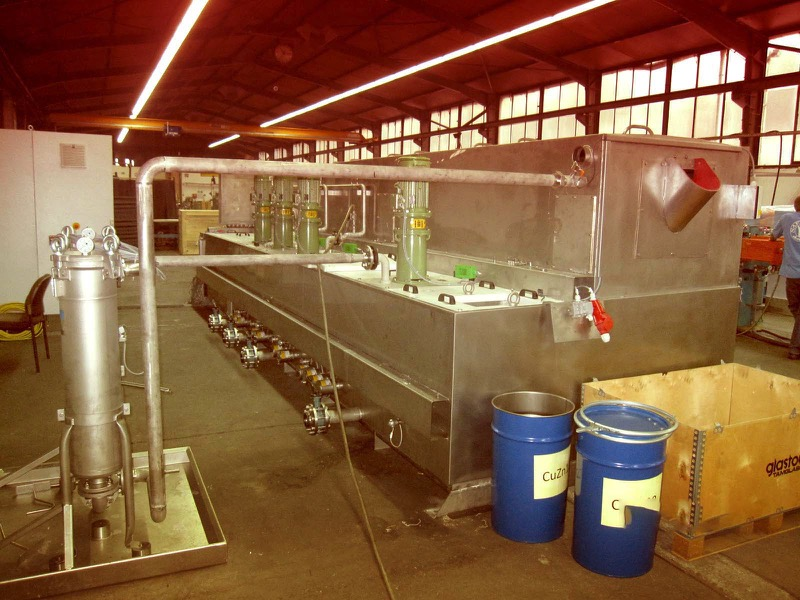

Closed Loop Filtration Systems
Particulate Free and Oils SeparatedMany plants operate in areas of stringent environmental controls. Water containing metallic compounds many not be freely discharged. This calls for closed loop filtration systems. particulates are continuously removed and oils separated and harvested. As a system, our units are effective and easily maintained.


